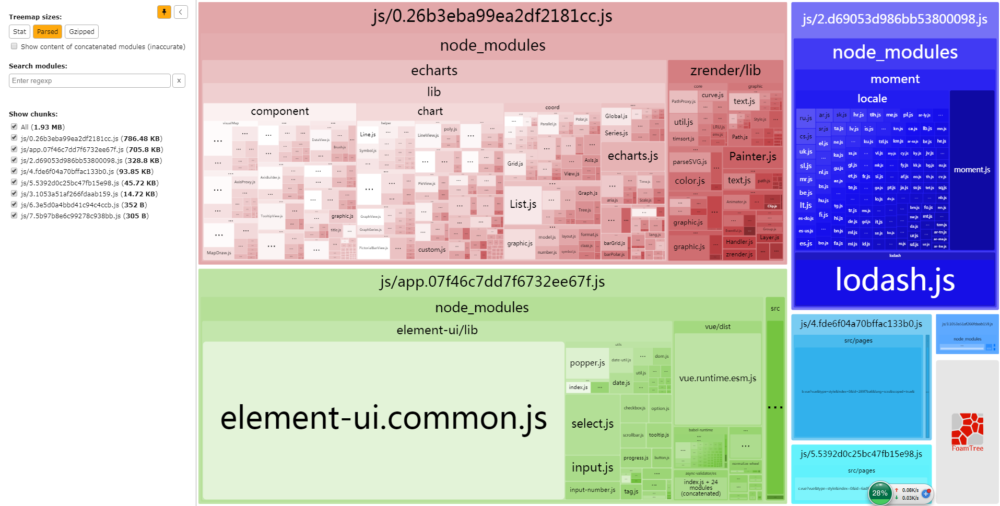

webpack splitChunk配置
实验文件依赖关系
src
|- index.js
| import vue,element-ui,axios,router.js,app.vue
|- router.js
| import vue,vue-router
|- App.vue
|- pages
|—- layout.vue
|—- a.vue
import echarts
|—- b.vue
import b-component.vue
import lodash,moment
|—- c.vue
import axios,echarts
默认配置
webpack4 已默认开启 optimization.splitChunks
1 | module.exports = { |
打包结果

结论
- 所有 node_modules 中的包都从 vue 文件 中分离出来，如果一个包被多个异步 page 引用，会进一步分离出来，剩下的仍然不会和 vue 合并。
- 一个 vue 引入另外 1 个 vue 文件，或者，js 文件（如 main.js）引入另外非 node_modules 的 js 文件，均会合并为 1 个包。
optimization.splitChunks.chunks 值的区别
initial:
首次加载的页面和 node_modules 做了拆分。
异步 page 不会拆分，即使两个异步组件都引用了同一个 node_modules 中的包也不会拆分（如果首次加载页面和异步 page 共用了 npm 包，也不会拆分），会导致重复打包。
async
见默认配置。
all
无论是首页还是异步加载页面，都会进行拆分。
理想的打包需求
默认配置中，只有是 node_modules 包，都会从页面中分离出来，即使只被该页面引入，更好的效果应该是和该页面合并，以减少 http 请求数。只需要将 minChunks 从默认值 1 修改为 2 即可。
经测，如果不修改 splitChunks 直接子属性，而是修改 cacheGroups 中的配置，无法实现上述效果（所有的 node_modules 都做了拆分）。
全文完。